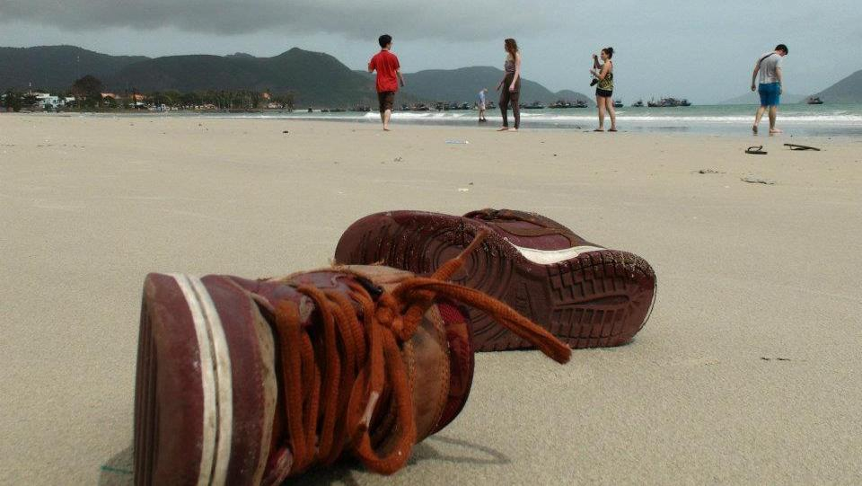

AN UNTITLED VIETNAM DOCUMENTARY;
FEBRUARY 18th, 2012 Well, I've obviously been working on the site too, but that's besides the point. This winter I went on a two week trip to Vietnam and brought along my little Sony HDcam. I shot a overwhelming ten hours of footage. Just now I finished transcoding all of it into iMovie –
SIDENOTE: Why iMovie you ask? Right now I'm studying in NYU Florence. I've been able to edit the site via a remote desktop application on my little netbook, but it just isn't feasible to edit by the same means. I've got a bit of a deadline on this project as well, so I don't really have much of a choice.
– and I plan to edit over the next couple of... while(s). For now you can satiate yourself with this. (Yes, my deviantART name is 'FutureRuler', pretend it isn't). I'm not going to say when or where it will be done. That's something I've learned from previous endeavors. Considering that I've now ingrained 8NFINITEIDEA into every aspect of my life (and most importantly, facebook), I hope that the constant reminder will help me take things more seriously.The steps I've taken should help transform this hobby into a career.
Oh, I plan to do a similar documentary-type thing for the places I visit in Europe too. That will obviously come even later then the so-called 'UNTITLED VIETNAM DOCUMENTARY'.
Also, I'm certainly planning on working with the site more. It may even 'evolve' into it's final stage organically as I try increasingly complex things.
...
-CIAO FOR NOW-
|